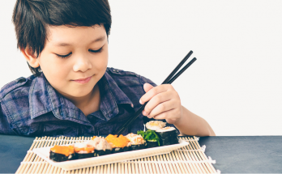

ဂျပန်နိုင်ငံက ကလေးတွေက ဘာကြောင့် အကျန်းမာဆုံး ကလေးတွေ ဖြစ်နေရတာလဲ

ဂျပန်နိုင်ငံက ကလေးတွေက ဘာကြောင့် အကျန်းမာဆုံး ကလေးတွေ ဖြစ်နေရတာလဲ
မင်္ဂလာပါ ဒီတစ်ခေါက်မှာ ဆွေးနွေးပေးမယ့် အကြောင်းအရာကတော့ ဂျပန်ကလေးတွေက ဘာကြောင့် ကမ္ဘာမှာ အကျန်းမာဆုံးကလေးတွေ ဖြစ်နေတာလဲဆိုတဲ့ အကြောင်းတွေကို ပြောပြပေးသွားမှာ ဖြစ်ပါတယ်။
အာရှတိုက်က ဂျပန်လူမျိုးတွေက ကျန်းမာရေးကောင်းပြီး အသက်ရှည်လို့ နာမည်ကြီးကြပါတယ်။ အဘိုးအဘွားတွေပါ ကျန်းမာအသက်ရှည် ရုံတင်မကဘဲ ကလေးသူငယ် အရွယ်မရွေး ကျန်းမာနေတာကို သတိပြုမိမှာပါ။ ဒါက ဂျပန်ရိုးရာဓလေ့၊ နိုင်ငံက ချမ်းသာတာကြောင့်အပြင် တချို့ အတုယူစရာကောင်းတဲ့ အကြောင်းအရာတွေကြောင့်လည်း ပါပါတယ်။
အာဟာရဓာတ် ပြည့်ဝအောင် ဘာလုပ်ကြလဲ
ဂျပန်နိုင်ငံလူမျိုးတွေရဲ့ အတွေ့အကြုံတွေအရ ကလေးတွေအတွက် အာဟာရဓာတ်ပြည့်ဝနေဖို့ အင်မတန်မှ အရေးကြီးတယ်ဆိုတာ သိပါတယ်။ ဒါကြောင့် ကလေးငယ်တွေအတွက် အာဟာရပညာရှင်နဲ့လည်း တိုင်ပင်တတ်ကြပြီး မိမိကလေးရဲ့ လိုအပ်တဲ့အာဟာရဓာတ်တွေ ပြည့်ဝအောင် ဖြည့်ဆည်းပေးကြပါတယ်။
ဒါ့အပြင် အဆီအစိမ့်တွေ အစားနည်းတဲ့အတွက် ဂျပန်ကလေးငယ်တွေဟာ အဝလွန်နှုန်း အင်မတန် နည်းပါတယ်။ ဒီလိုဖြစ်အောင်လည်း အစားအစာထဲမှာ လိုအပ်တဲ့ အာဟာရဓာတ်တွေ အပြည့်အဝ ပါနေတဲ့အတွက် တခြားသော အပြင်စာ၊ အလွယ်တကူ ရနိုင်ပြီး အဆီများတဲ့ အသင့်စားအစာတွေကို မစားဖြစ်တော့ပါဘူး။ ဒါကြောင့် ကလေးငယ် အဝလွန်နှုန်း လျော့ကျနေရတာပဲ ဖြစ်ပါတယ်။
အစားအစာ အသစ်အဆန်းတွေ စားသောက်တယ်
ဒါကတော့ မြန်မာနိုင်ငံမှာ အဆင်မပြေလောက်ဘူးလို့ ကျွန်တော် ထင်မြင်ပါတယ်။ ဂျပန်နိုင်ငံမှာက အစားအသောက်က သန့်ပြီး အရောအနှော ပါဝင်မှုနည်းတဲ့အတွက် မိဘတွေက တခြား အပြင်က အစားအစာတွေကို စားသောက်ဖို့ အားပေးပါတယ်။ ဒေသထွက်အစားအစာတွေကို စားသောက်တာကြောင့် ပိုပြီးလက်ဆတ်တဲ့ အစားအစာတွေကို သုံးစွဲနိုင်မှာပါ။ မြန်မာနိုင်ငံက စျေးကွက်အနေအထားအရ ကလေးငယ်တွေက အစားအစာအသစ်တွေကို မိဘဆုံးဖြတ်ချက်မပါဘဲ စားသောက်ဖို့တော့ လက်ရှိ အနေအထားအရ မဖြစ်နိုင်သေးပါဘူးလို့ပဲ ယူဆပါရစေ။
လေ့ကျင့်ခန်းတွေ ပုံမှန် လုပ်တယ်
နိုင်ငံတကာမှာ သန်မာကြံခိုင်မှုကို အလေးထားတဲ့အတွက် ကလေးငယ်တွေကို ကျောင်းကဖြစ်စေ၊ အိမ်မှာဖြစ်စေ ကိုယ်လက်လှုပ်ရှား အားကစားလုပ်ဖို့ အားပေးကြပါတယ် ။ ပြေးလွှားခြင်း၊ ခုန်ခြင်း အစရှိတဲ့ လေ့ကျင့်ခန်းတွေ အပြင် ကလေးငယ်တွေ သန်ရာသန်ရာ အားကစားတွေကိုလည်း အားပေးပါတယ်။ ဒါကြောင့်လည်း ကလေးငယ်တွေရဲ့ ကိုယ်ကာယကြံခိုင်ပြီး ခန္ဓာကိုယ် ဖွံဖြိုးနေတာ ဖြစ်ပါတယ်။ တစ်ချိန်က ဂျပန်ငပုလို့ ခေါ်ခဲ့ကြတဲ့ ဂျပန်လူမျိုးတွေရဲ့ အရပ်အမောင်းက ကျွန်တော်တို့ မြန်မာလူမျိုးတွေထက် ကျော်လွန်သွားခဲ့ပါပြီ။
မိဘနဲ့ သားသမီး ရင်းနီးကြတယ်
ဒါကိုတော့ မြန်မာလို ဆီလျော်အောင်ပြောရရင် ကလေးကို သူငယ်ချင်းပေါင်း ပေါင်းတယ်လို့ ပြောနိုင်ပါတယ်။ အစစအရာရာ မိဘလိုနေမဲ့အစား သူတို့ရဲ့ သူငယ်ချင်းတွေလို စိတ်ထဲက ခံစားချက်တွေ အကုန်လုံးကို တိုင်ပင်ဖွင့်ပြောနိုင်အောင် လုပ်ဆောင်သင့်ပါတယ်။ ကလေးငယ်တွေကို ဒါပဲ လုပ်ရမယ်ဆိုတဲ့ အမိန့်အစား ဒါလေးကို ဘာကြောင့် လုပ်သင့်တယ်ဆိုိတဲ့ အလေ့အကျင့်တွေ၊ မေးခွန်းထုတ်တတ်အောင် သင်ကြားမှုတွေက ကလေးငယ်ကို မိသားစုကို ခင်မင်ရင်းနှီးနေစေသလို စိတ်ပိုင်းဆိုင်ရာ ခွန်အားတွေ ရရှိစေပါတယ်လို့ စိတ်ပညာရပ်ဆိုင်ရာ ပညာရှင်တွေက ရှုမြင်ပါတယ်။
အဆုံးထိ ဖတ်ရှုပေးတဲ့အတွက် ကျေးဇူးတင်ပါတယ်။ ကလေးငယ်တွေကို ပြုစုစောင့်ရှောက်ရာမှာ မိမိဒေသ၊ မိသားစုနဲ့ သေချာတိုင်ပင်ပြီး စောင့်ရှောက်တာသာ ကလေးငယ်ရဲ့ ကျန်းမာရေးအရရော စိတ်ဓာတ်ပိုင်းဆိုင်ရာအရရော အကျိုးရှိမယ်လို့ ယူဆမိပါတယ်။
အားလုံးပဲ ကျန်းမာချမ်းသာကြပါစေ။
Source-ဒေါက်တာအောင်ကျော်မြင့်